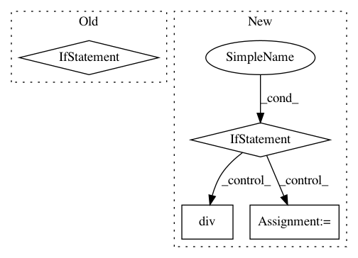

233f859f7218e31357d05aa8c3752dc552197130,dask_ml/preprocessing/data.py,MinMaxScaler,inverse_transform,#MinMaxScaler#Any#Any#Any#,115
Before Change
_X -= self.min_
_X /= self.scale_
if isinstance(_X, dd.DataFrame) and self.columns:
for column in self.columns:
X[column] = _X[column]
return X
else:
return _X
class QuantileTransformer(skdata.QuantileTransformer):
Transforms features using quantile information.
This implementation differs from the scikit-learn implementation
After Change
"Call "fit" with appropriate arguments before "
"using this method.")
X = X.copy()
if isinstance(X, dd.DataFrame):
X = X.sub(self.min_)
X = X.div(self.scale_)
else:
X -= self.min_
X /= self.scale_
return X
class QuantileTransformer(skdata.QuantileTransformer):
In pattern: SUPERPATTERN
Frequency: 4
Non-data size: 4
Instances
Project Name: dask/dask-ml
Commit Name: 233f859f7218e31357d05aa8c3752dc552197130
Time: 2017-10-30
Author: TomAugspurger@users.noreply.github.com
File Name: dask_ml/preprocessing/data.py
Class Name: MinMaxScaler
Method Name: inverse_transform
Project Name: OpenNMT/OpenNMT-py
Commit Name: a850f4a77146f79da97a151281e474ee0cd70d1b
Time: 2019-02-01
Author: guillaumekln@users.noreply.github.com
File Name: onmt/utils/loss.py
Class Name: LossComputeBase
Method Name: __call__
Project Name: mozilla/TTS
Commit Name: 9b4aa92667ce7977f30f9b6473b567567a78046f
Time: 2018-03-19
Author: egolge@mozilla.com
File Name: layers/tacotron.py
Class Name: Decoder
Method Name: forward
Project Name: mozilla/TTS
Commit Name: b5f2181e04ebe293f39c49a4304861c52218b7c4
Time: 2018-02-23
Author: egolge@mozilla.com
File Name: layers/tacotron.py
Class Name: Decoder
Method Name: forward